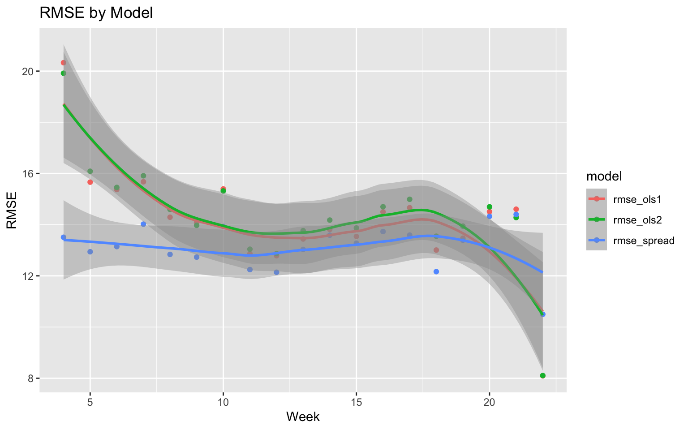
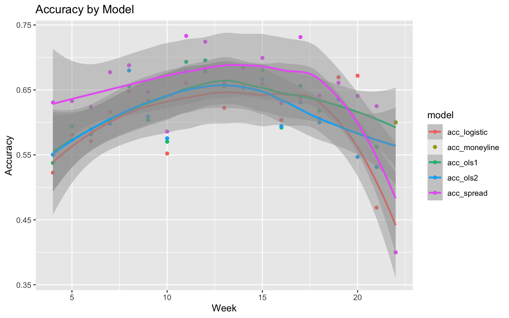
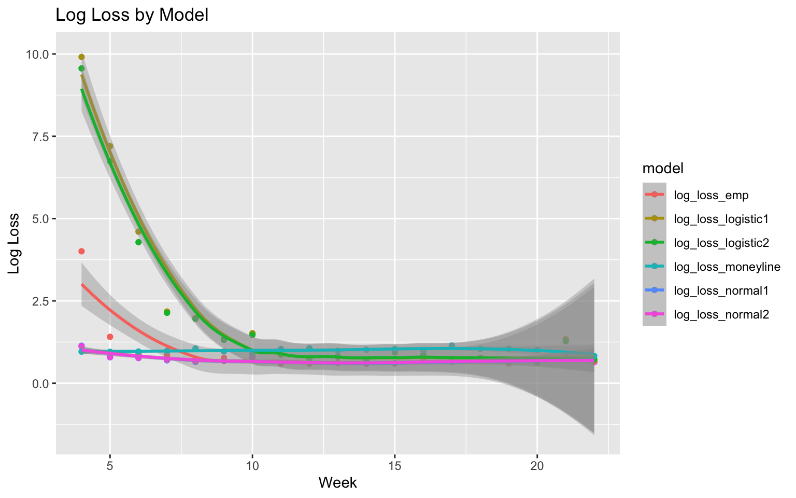
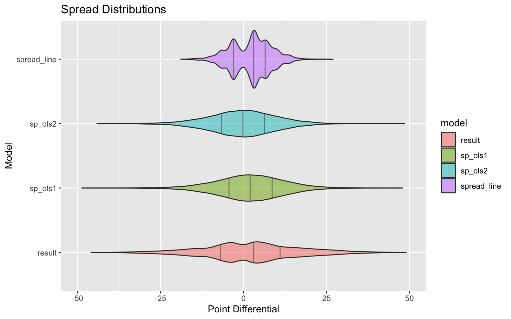
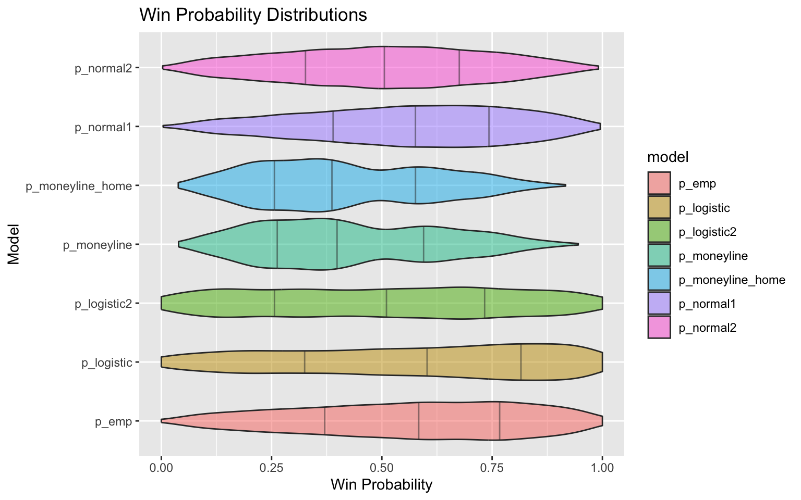

Chapter 1 NFL Game Predictions
This chapter is an exposition on experiments using the NFL predictions package. This package is designed to predict the outcomes of NFL games in terms of win probability, point spread, and point totals. In the first few sections, we will describe each method of the point spread and win probability models. In the final section, we will compare the models and how they perform against betting market lines. At this point, we find that the simple models offered by this package are outperformed by the betting market lines, but they do provide a reasonable baseline for future model development.
1.1 Win Probability Model
The simplest model in the package is a logistic regression model for win probability. Assuming \(J\) teams playing a total of \(N\) games, our model starts with a \((N+2) \times (J+1)\) design matrix \(X\) where
\[\begin{equation} \tag{1.1} X_{ij} = \begin{cases} \phantom{-}1 & \text{ if } i > N\:\text{or}\:j = J + 1\\ \phantom{-}1 & \text{ if } \text{team } j \text{ is the home team in game } i\\ -1 & \text{ if } \text{team } j \text{ is the away team in game } i \end{cases} \end{equation}\]
We let the last column be all equal to 1 to represent the effect for home field advantage. We let the last row equal 1 to make the matrix have full column rank and center the team effect estimates at 0. The response, \(\mathbf{w}\), is a binary vector of length \(N+ 1\) where \(w_i = 1\) if the home team won game \(i\) and \(w_i = 0\) otherwise. We use the logit link function, meaning that we assume
\[\begin{equation} \begin{split} &w_i \sim \text{Bernoulli}(\pi_i) \\ &\text{logit}(\pi_i) = X_i \tau \end{split} \end{equation}\]
where \(\tau\) is a vector of length \(J+1\) containing the team effects and the home field advantage effect. We fit this model using maximum likelihood estimation, which is implemented in the glm function in R. The fitted model can then be used to predict the win probability for any game by plugging in the appropriate values for the home and away teams.
1.2 Point Spread Model
The point spread model uses the same design matrix, \(X\) as was used in the win probability model. Instead of a binary response, we let have a continuous response \(\mathbf{y}\in\mathbb{R}^{N+1}\) where \(y_i\) equals the home team’s score minus the away team’s score in game \(i\le N\), and \(y_{N+1} = 0\). We perform linear regression to solve the equation
\[\begin{equation} \tag{1.2} X\hat{\beta} = \mathbf{y}. \end{equation}\]
We interpret the solution \(\hat{\beta}\) as our best linear unbiased estimator (BLUE) of team effects, where \(\hat{\beta}_j\) is the effect of team \(j \le J\), where league average is \(0\), and \(\hat{\beta}_{J+1}\) is the effect of home field advantage, assumed to be uniform across the league. On a game by game, level, we are assuming the margin of victory for the home team is given by
\[\begin{equation} {y}_i = \beta_{\text{home}[i]} - \beta_{\text{away}[i]} + \beta_{J+1} + \varepsilon_i, \end{equation}\]
where \(\varepsilon_1, ...,\varepsilon_N\) are independent, identically distributed, and have mean 0. There are a couple of obvious ways we can derive a win probability from this model’s estimates.
The simpler way to estimate win probability using the point spread model is to assume that the \(\varepsilon_1, ..., \varepsilon_N \overset{\text{iid}}{\sim}N(0,\sigma^2)\). After fitting the model, we obtain the estimate \(\hat{y} := X\hat{\beta}\), and the estimate for \(\sigma\) is obtained in the usual way, by dividing the sum of squared errors by degrees of freedom. The degrees of freedom equals the number of observations minus the column rank of \(X\).
\[\begin{equation} \hat{\sigma}^2 = \frac{1}{N - J}\sum_{j = 1}^{N+1}(y_j - \hat{y}_j)^2 \end{equation}\]
With team and field advantage effects estimated, we obtain the Normal Win Probability estimate that team \(i\) beats team \(j\) at home by
\[\begin{equation} \tag{1.3} \begin{split} \mathbb{P}[\beta_i - \beta_j + \beta_{J+1} + \varepsilon > 0] &= \mathbb{P}[\varepsilon < \beta_i - \beta_j + \beta_{J+1} ]\\ &\approx \mathbb{P}[\varepsilon < \hat{\beta}_i - \hat{\beta}_j + \hat{\beta}_{J+1}]\\ &= \Phi\left(\frac{\hat{\beta}_i - \hat{\beta}_j + \hat{\beta}_{J+1}}{\hat{\sigma}}\right) \end{split} \end{equation}\]
where \(\Phi(z)\) denotes the CDF of a standard normal distribution.
We also consider using the empirical distribution of the residuals to estimate win probability. From the point spread model, we define the empirical win probability estimate that team \(i\) defeats team \(j\) at home by
\[\begin{equation} \tag{1.4} \begin{split} \mathbb{P}[\beta_i - \beta_j + \beta_{J+1} + \varepsilon > 0] &= \mathbb{P}[\varepsilon < \beta_i - \beta_j + \beta_{J+1} ]\\ &\approx \frac{1}{2N}\sum_{n = 1}^N\mathbf{1}_{\{r_n <\beta_i - \beta_j + \beta_{J+1}\}} + \frac{1}{2N}\sum_{n = 1}^N\mathbf{1}_{\{-r_n <\beta_i - \beta_j + \beta_{J+1}\}} \end{split} \end{equation}\]
where \(r_n = y_n - \hat{y}_n\) is the empirical residual from game \(n\). We combine the empirical CDF of the positive and negative residuals to create a symmetric distribution of residuals.
1.3 Model Comparison
We evaluate the following five models using out-of-sample predictions from the 1999 through 2025 seasons:
- Normal OLS with home-field advantage (
p_normal1andsp_ols1): point differentials are fit by OLS, and residuals are assumed to be normally distributed. - Empirical OLS with home-field advantage (
p_emp): the same OLS point differential model is converted to a win probability using the symmetric empirical residual distribution. - Normal OLS without home-field advantage (
p_normal2andsp_ols2): the normal OLS model is refit without a separate home-field effect. - Logistic regression with home-field advantage (
p_logistic): game outcomes are modeled directly with a logit link and a home-field effect. - Logistic regression without home-field advantage (
p_logistic2): the logistic model is refit without a separate home-field effect.
The market point spread and a probability derived from the home and away moneylines are included as benchmarks.
library(dplyr)
library(ggplot2)
library(tidyr)
val_data <- readRDS(
"data/win_prob_validation2026-09-08.rds"
)
american_to_odds <- function(line) {
ifelse(line > 0, abs(line) / 100, 100 / abs(line))
}
american_to_prob <- function(line) {
odds <- american_to_odds(line)
odds / (1 + odds)
}The validation data contain one row per predicted game. The tables below show a small sample of the game information and model outputs.
validation_preview <- val_data %>%
select(
season, game_type, week, home_team, away_team,
spread_line, result, p_normal1, sp_ols1, p_emp,
p_normal2, sp_ols2, p_logistic, p_logistic2
) %>%
slice_head(n = 10)
knitr::kable(
validation_preview %>%
select(
season, game_type, week, home_team, away_team,
spread_line, result
),
digits = 1,
caption = "Sample of games in the validation data."
)| season | game_type | week | home_team | away_team | spread_line | result |
|---|---|---|---|---|---|---|
| 1999 | REG | 4 | Atlanta Falcons | Baltimore Ravens | 2.5 | -6 |
| 1999 | REG | 4 | Chicago Bears | New Orleans Saints | -1.0 | 4 |
| 1999 | REG | 4 | Cincinnati Bengals | St. Louis Rams | -3.5 | -28 |
| 1999 | REG | 4 | Cleveland Browns | New England Patriots | -12.0 | -12 |
| 1999 | REG | 4 | Dallas Cowboys | Arizona Cardinals | 7.0 | 28 |
| 1999 | REG | 4 | Denver Broncos | New York Jets | 5.5 | -8 |
| 1999 | REG | 4 | Minnesota Vikings | Tampa Bay Buccaneers | 7.0 | 7 |
| 1999 | REG | 4 | New York Giants | Philadelphia Eagles | 9.5 | 1 |
| 1999 | REG | 4 | Pittsburgh Steelers | Jacksonville Jaguars | -3.0 | -14 |
| 1999 | REG | 4 | San Diego Chargers | Kansas City Chiefs | 1.0 | 7 |
knitr::kable(
validation_preview %>%
select(
p_normal1, sp_ols1, p_emp, p_normal2, sp_ols2,
p_logistic, p_logistic2
),
digits = 3,
caption = "Model outputs for the sample games."
)| p_normal1 | sp_ols1 | p_emp | p_normal2 | sp_ols2 | p_logistic | p_logistic2 |
|---|---|---|---|---|---|---|
| 0.556 | 2.1 | 0.568 | 0.555 | 2.0 | 1.000 | 0.333 |
| 0.778 | 11.4 | 0.932 | 0.786 | 11.4 | 1.000 | 1.000 |
| 0.014 | -32.9 | 0.000 | 0.011 | -33.0 | 0.000 | 0.000 |
| 0.021 | -30.2 | 0.000 | 0.017 | -30.3 | 0.969 | 0.000 |
| 0.988 | 33.5 | 1.000 | 0.990 | 33.5 | 1.000 | 1.000 |
| 0.174 | -14.0 | 0.023 | 0.163 | -14.1 | 0.000 | 0.395 |
| 0.770 | 11.0 | 0.932 | 0.776 | 10.9 | 1.000 | 1.000 |
| 0.841 | 14.9 | 0.977 | 0.849 | 14.8 | 1.000 | 1.000 |
| 0.339 | -6.2 | 0.250 | 0.330 | -6.3 | 1.000 | 1.000 |
| 0.476 | -0.9 | 0.477 | 0.475 | -0.9 | 0.000 | 0.000 |
We compare point predictions using root mean squared error (RMSE), and win probabilities using classification accuracy and log loss. Probabilities are bounded slightly away from zero and one before calculating log loss.
p_fudge <- 1e-10
val_performance <- val_data %>%
drop_na(
season, game_type, week, home_team, away_team,
spread_line, result, p_normal1, sp_ols1, p_emp,
p_normal2, sp_ols2, p_logistic, p_logistic2
) %>%
mutate(
across(
starts_with("p_"),
~ case_when(
.x < p_fudge ~ p_fudge,
.x > 1 - p_fudge ~ 1 - p_fudge,
TRUE ~ .x
)
),
res_ols1 = result - sp_ols1,
res_ols2 = result - sp_ols2,
res_spread = result - spread_line,
p_moneyline = american_to_prob(home_moneyline) /
(
american_to_prob(home_moneyline) +
american_to_prob(away_moneyline)
),
p_moneyline_home = american_to_prob(home_moneyline),
binary = as.numeric(result > 0),
log_loss_normal1 =
-binary * log(p_normal1) -
(1 - binary) * log(1 - p_normal1),
log_loss_normal2 =
-binary * log(p_normal2) -
(1 - binary) * log(1 - p_normal2),
log_loss_emp =
-binary * log(p_emp) -
(1 - binary) * log(1 - p_emp),
log_loss_logistic1 =
-binary * log(p_logistic) -
(1 - binary) * log(1 - p_logistic),
log_loss_logistic2 =
-binary * log(p_logistic2) -
(1 - binary) * log(1 - p_logistic2),
log_loss_moneyline =
-binary * log(p_moneyline) -
(1 - binary) * log(1 - p_moneyline),
acc_ols1 = as.numeric(result * sp_ols1 > 0),
acc_ols2 = as.numeric(result * sp_ols2 > 0),
acc_logistic = as.numeric(
result * (p_logistic - 0.5) > 0
),
acc_spread = as.numeric(result * spread_line > 0),
acc_moneyline = as.numeric(
result * (p_moneyline - 0.5) > 0
)
)
weekly <- val_performance %>%
group_by(week) %>%
summarise(
n = n(),
n_moneyline = sum(!is.na(p_moneyline)),
n_missing = sum(is.na(result)),
across(starts_with("res_"), ~ sqrt(mean(.x^2))),
across(starts_with("log_loss_"), ~ mean(.x, na.rm = TRUE)),
across(starts_with("acc_"), ~ mean(.x)),
.groups = "drop"
) %>%
rename_with(
~ stringr::str_replace(.x, "res_", "rmse_"),
starts_with("res_")
)
game_type <- val_performance %>%
group_by(game_type) %>%
summarise(
n = n(),
n_moneyline = sum(!is.na(p_moneyline)),
n_missing = sum(is.na(result)),
across(starts_with("res_"), ~ sqrt(mean(.x^2))),
across(starts_with("log_loss_"), ~ mean(.x, na.rm = TRUE)),
across(starts_with("acc_"), ~ mean(.x)),
.groups = "drop"
) %>%
rename_with(
~ stringr::str_replace(.x, "res_", "rmse_"),
starts_with("res_")
) %>%
arrange(desc(n))1.3.1 Performance by week
knitr::kable(
weekly %>%
select(week, n, starts_with("rmse_")),
digits = 3,
caption = "Weekly RMSE by point-spread model."
)| week | n | rmse_ols1 | rmse_ols2 | rmse_spread |
|---|---|---|---|---|
| 4 | 398 | 20.329 | 19.917 | 13.508 |
| 5 | 384 | 15.661 | 16.087 | 12.941 |
| 6 | 380 | 15.374 | 15.455 | 13.143 |
| 7 | 378 | 15.676 | 15.910 | 14.020 |
| 8 | 378 | 14.292 | 14.597 | 12.838 |
| 9 | 371 | 14.089 | 13.973 | 12.731 |
| 10 | 384 | 15.396 | 15.318 | 13.928 |
| 11 | 401 | 12.864 | 13.041 | 12.244 |
| 12 | 417 | 12.787 | 12.871 | 12.140 |
| 13 | 421 | 13.440 | 13.766 | 13.032 |
| 14 | 418 | 13.812 | 14.179 | 13.587 |
| 15 | 429 | 13.540 | 13.869 | 13.278 |
| 16 | 429 | 14.500 | 14.700 | 13.731 |
| 17 | 428 | 14.663 | 14.991 | 13.592 |
| 18 | 170 | 13.008 | 13.549 | 12.165 |
| 19 | 118 | 13.470 | 13.943 | 13.392 |
| 20 | 64 | 14.508 | 14.696 | 14.324 |
| 21 | 32 | 14.604 | 14.278 | 14.399 |
| 22 | 5 | 8.094 | 8.104 | 10.498 |
knitr::kable(
weekly %>%
select(week, n, starts_with("acc_")),
digits = 3,
caption = "Weekly classification accuracy by model."
)| week | n | acc_ols1 | acc_ols2 | acc_logistic | acc_spread | acc_moneyline |
|---|---|---|---|---|---|---|
| 4 | 398 | 0.538 | 0.550 | 0.523 | 0.631 | NA |
| 5 | 384 | 0.594 | 0.573 | 0.581 | 0.633 | NA |
| 6 | 380 | 0.589 | 0.582 | 0.571 | 0.624 | NA |
| 7 | 378 | 0.603 | 0.598 | 0.616 | 0.677 | NA |
| 8 | 378 | 0.656 | 0.680 | 0.648 | 0.688 | NA |
| 9 | 371 | 0.604 | 0.609 | 0.633 | 0.647 | NA |
| 10 | 384 | 0.570 | 0.576 | 0.552 | 0.586 | NA |
| 11 | 401 | 0.693 | 0.678 | 0.661 | 0.733 | NA |
| 12 | 417 | 0.695 | 0.679 | 0.683 | 0.724 | NA |
| 13 | 421 | 0.656 | 0.656 | 0.622 | 0.660 | NA |
| 14 | 418 | 0.653 | 0.653 | 0.656 | 0.684 | NA |
| 15 | 429 | 0.681 | 0.667 | 0.660 | 0.699 | NA |
| 16 | 429 | 0.592 | 0.594 | 0.604 | 0.629 | NA |
| 17 | 428 | 0.657 | 0.631 | 0.638 | 0.731 | NA |
| 18 | 170 | 0.618 | 0.600 | 0.606 | 0.641 | NA |
| 19 | 118 | 0.669 | 0.636 | 0.669 | 0.661 | NA |
| 20 | 64 | 0.641 | 0.547 | 0.672 | 0.641 | NA |
| 21 | 32 | 0.562 | 0.531 | 0.469 | 0.625 | NA |
| 22 | 5 | 0.600 | 0.600 | 0.400 | 0.400 | 0.6 |
knitr::kable(
weekly %>%
select(week, n_moneyline, starts_with("log_loss_")),
digits = 3,
caption = "Weekly log loss by win-probability model."
)| week | n_moneyline | log_loss_normal1 | log_loss_normal2 | log_loss_emp | log_loss_logistic1 | log_loss_logistic2 | log_loss_moneyline |
|---|---|---|---|---|---|---|---|
| 4 | 285 | 1.139 | 1.123 | 4.008 | 9.910 | 9.562 | 0.960 |
| 5 | 286 | 0.790 | 0.794 | 1.410 | 7.200 | 6.747 | 0.956 |
| 6 | 283 | 0.764 | 0.773 | 0.888 | 4.603 | 4.284 | 0.963 |
| 7 | 279 | 0.696 | 0.719 | 0.851 | 2.176 | 2.139 | 0.982 |
| 8 | 280 | 0.646 | 0.668 | 0.727 | 1.985 | 1.956 | 1.057 |
| 9 | 272 | 0.681 | 0.674 | 0.768 | 1.354 | 1.317 | 0.966 |
| 10 | 283 | 0.796 | 0.780 | 0.891 | 1.519 | 1.471 | 0.903 |
| 11 | 292 | 0.594 | 0.603 | 0.602 | 0.868 | 0.880 | 1.038 |
| 12 | 308 | 0.593 | 0.597 | 0.597 | 0.755 | 0.749 | 1.064 |
| 13 | 312 | 0.614 | 0.623 | 0.624 | 0.804 | 0.810 | 0.983 |
| 14 | 304 | 0.592 | 0.609 | 0.602 | 0.711 | 0.725 | 1.017 |
| 15 | 319 | 0.596 | 0.606 | 0.603 | 0.937 | 0.941 | 1.039 |
| 16 | 318 | 0.683 | 0.693 | 0.697 | 0.871 | 0.867 | 1.003 |
| 17 | 315 | 0.641 | 0.658 | 0.651 | 0.678 | 0.694 | 1.146 |
| 18 | 141 | 0.681 | 0.698 | 0.691 | 0.757 | 0.773 | 1.042 |
| 19 | 89 | 0.603 | 0.622 | 0.602 | 0.649 | 0.651 | 1.049 |
| 20 | 50 | 0.654 | 0.659 | 0.655 | 0.621 | 0.618 | 1.008 |
| 21 | 25 | 0.785 | 0.753 | 0.798 | 1.336 | 1.276 | 0.739 |
| 22 | 5 | 0.651 | 0.638 | 0.666 | 0.721 | 0.720 | 0.828 |
weekly %>%
pivot_longer(
starts_with("rmse_"),
names_to = "model",
values_to = "rmse"
) %>%
ggplot(aes(x = week, y = rmse, color = model)) +
geom_point() +
geom_smooth() +
labs(x = "Week", y = "RMSE", title = "RMSE by Model")
weekly %>%
pivot_longer(
starts_with("acc_"),
names_to = "model",
values_to = "acc"
) %>%
ggplot(aes(x = week, y = acc, color = model)) +
geom_point() +
geom_smooth() +
labs(x = "Week", y = "Accuracy", title = "Accuracy by Model")
weekly %>%
pivot_longer(
starts_with("log_loss_"),
names_to = "model",
values_to = "log_loss"
) %>%
ggplot(aes(x = week, y = log_loss, color = model)) +
geom_point() +
geom_smooth(method = "loess", mapping = aes(weight = n)) +
labs(
x = "Week",
y = "Log Loss",
title = "Log Loss by Model"
)
1.3.2 Performance by game type
knitr::kable(
game_type %>%
select(game_type, n, starts_with("rmse_")),
digits = 3,
caption = "RMSE by game type and point-spread model."
)| game_type | n | rmse_ols1 | rmse_ols2 | rmse_spread |
|---|---|---|---|---|
| REG | 5696 | 14.803 | 14.957 | 13.182 |
| WC | 120 | 13.422 | 13.989 | 13.362 |
| DIV | 108 | 12.874 | 13.257 | 12.834 |
| CON | 54 | 15.021 | 15.195 | 14.646 |
| SB | 27 | 14.143 | 13.598 | 14.642 |
knitr::kable(
game_type %>%
select(game_type, n, starts_with("acc_")),
digits = 3,
caption = "Classification accuracy by game type and model."
)| game_type | n | acc_ols1 | acc_ols2 | acc_logistic | acc_spread | acc_moneyline |
|---|---|---|---|---|---|---|
| REG | 5696 | 0.628 | 0.624 | 0.619 | 0.669 | NA |
| WC | 120 | 0.650 | 0.592 | 0.617 | 0.608 | NA |
| DIV | 108 | 0.639 | 0.611 | 0.667 | 0.676 | NA |
| CON | 54 | 0.667 | 0.556 | 0.685 | 0.667 | NA |
| SB | 27 | 0.519 | 0.556 | 0.370 | 0.519 | NA |
knitr::kable(
game_type %>%
select(game_type, n_moneyline, starts_with("log_loss_")),
digits = 3,
caption = "Log loss by game type and win-probability model."
)| game_type | n_moneyline | log_loss_normal1 | log_loss_normal2 | log_loss_emp | log_loss_logistic1 | log_loss_logistic2 | log_loss_moneyline |
|---|---|---|---|---|---|---|---|
| REG | 4216 | 0.700 | 0.707 | 0.983 | 2.379 | 2.296 | 1.009 |
| WC | 91 | 0.631 | 0.653 | 0.634 | 0.671 | 0.690 | 0.967 |
| DIV | 79 | 0.613 | 0.629 | 0.613 | 0.644 | 0.641 | 1.039 |
| CON | 40 | 0.677 | 0.683 | 0.682 | 0.631 | 0.627 | 0.974 |
| SB | 20 | 0.783 | 0.730 | 0.796 | 1.486 | 1.408 | 0.699 |
Across the validation data, the market spread generally has lower RMSE and higher classification accuracy than either OLS model. Among the package’s win-probability estimates, the normal OLS model with home-field advantage has the lowest overall log loss.
1.3.3 Distribution of predictions
val_data %>%
pivot_longer(
cols = c(starts_with("sp_"), spread_line, result),
names_to = "model",
values_to = "prediction"
) %>%
ggplot(aes(x = prediction, y = model, fill = model)) +
geom_violin(
alpha = 0.5,
draw_quantiles = c(0.25, 0.5, 0.75)
) +
xlim(-50, 50) +
labs(
x = "Point Differential",
y = "Model",
title = "Spread Distributions"
)
val_performance %>%
filter(week > 10) %>%
pivot_longer(
cols = c(starts_with("p_")),
names_to = "model",
values_to = "prediction"
) %>%
ggplot(aes(x = prediction, y = model, fill = model)) +
geom_violin(
alpha = 0.5,
draw_quantiles = c(0.25, 0.5, 0.75)
) +
xlim(0, 1) +
labs(
x = "Win Probability",
y = "Model",
title = "Win Probability Distributions"
)
The empirical and logistic models place more mass near zero and one than the normal OLS models. Their more extreme predictions are penalized heavily by log loss when the predicted winner loses.